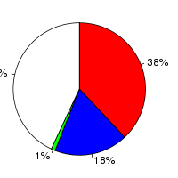
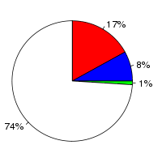

Oryza sativa Japonica (Oryza sativa, IRGSP-1.0) and Glycine max (Glycine max, V1.0) were aligned using the LastZ alignment algorithm (LastZ) in Ensembl release 76. Oryza sativa Japonica was used as the reference species. After running LastZ, the raw LastZ alignment blocks are chained according to their location in both genomes. During the final netting process, the best sub-chain is chosen in each region on the reference species.
Full list of pairwise alignments| Gap open penalty (O) | 400 |
| Gap extend penalty (E) | 30 |
| HSP threshold (K) | 3000 |
| Threshold for gapped extension (L) | 3000 |
| Threshold for alignments between gapped alignment blocks (H) | 2200 |
| Masking count (M) | |
| Seed and Transition value (T) | 1 |
| Additional parameters | --ambiguous=iupac |
| Scoring matrix (Q) | Default |
| Oryza sativa Japonica | Glycine max | |
|---|---|---|
| Chunk size | 50,000,000 | 100,100,000 |
| Overlap | 0 | 100,000 |
| Group set size | 0 | 100,100,000 |
| Masking options | {default_soft_masking => 1} | {default_soft_masking => 1} |
Number of alignment blocks: 103673
| Genome coverage(bp) | Coding exon coverage (bp) | |
|---|---|---|
| Oryza sativa Japonica |
|
 |
| Covered: 32,753,888 out of 374,424,240 | Matches: 12,798,659 out of 34,124,807 | |
| Uncovered: 341,670,352 out of 374,424,240 | Mis-matches: 6,290,577 out of 34,124,807 | |
| Insertions: 485,493 out of 34,124,807 | ||
| Uncovered: 14,550,078 out of 34,124,807 | ||
| Glycine max |
|
 |
| Covered: 24,597,938 out of 973,344,380 | Matches: 11,046,044 out of 64,476,920 | |
| Uncovered: 948,746,442 out of 973,344,380 | Mis-matches: 5,359,340 out of 64,476,920 | |
| Insertions: 388,050 out of 64,476,920 | ||
| Uncovered: 47,683,486 out of 64,476,920 |